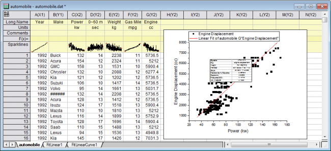

Datenfilter
Data-Filter
Zusammenfassung
Der Datenfilter ist ein spaltenbasiertes Hilfsmittel, mit dem Zeilen mit Arbeitsblattdaten reduziert und in der Folge auch unerwünschte Zeilen von einer bestimmten Datenanalyse und grafischen Darstellung ausgenommen werden. Es werden drei Datenformate unterstützt: numerisch, Text und Datum/Zeit.
Origin-Version mind. erforderlich: Origin 2015 SR0
Was Sie lernen werden
Dieses Tutorial zeigt Ihnen, wie Sie:
- den Datenfilter zum Reduzieren von Arbeitsblattdaten verwenden,
- Diagramme und Analyseergebnisse automatisch aktualisieren, wenn ein Spaltenfilter angewendet wird,
- ein frei bewegliches Diagramm in ein Arbeitsblatt einfügen.
Schritte
- Öffnen Sie eine neue Arbeitsmappe. Wählen Sie Hilfe: Ordner öffnen: Sample-Ordner ... im Menü, um den Ordner "Samples" zu öffnen. Öffnen Sie in diesem Ordner den Unterordner Statistics. Dort befindet sich die Datei automobile.dat. Ziehen Sie diese Datei per Drag&Drop in das leere Arbeitsblatt, um sie zu importieren.
- Markieren Sie Spalte C (Power), klicken Sie mit der rechten Maustaste und wählen Sie Setzen als: Als X setzen im Kontextmenü, um die Spalte als X festzulegen.
- Markieren Sie Spalte C und G (beim Klicken Strg-Taste gedrückt halten) und klicken Sie auf die Schaltfläche
 auf der Symbolleiste 2D-Grafiken, um ein Punktdiagramm aus diesen beiden Spalten zu erzeugen.
auf der Symbolleiste 2D-Grafiken, um ein Punktdiagramm aus diesen beiden Spalten zu erzeugen.
- Aktivieren Sie das erstellte Diagramm und wählen Sie Analyse: Anpassen: Linearer Fit im Menü, um den Dialog Lineare Anpassung zu öffnen. In diesem Dialog setzen Sie Neu berechnen auf Auto, um die automatische Aktualisierung der Analyseergebnisse sicherzustellen, übernehmen Sie die anderen Standardeinstellungen und klicken Sie auf OK, um die Analyse durchzuführen.
- Die angepasste Kurve und eine Ergebnistabelle werden zum Diagramm hinzugefügt. Aktivieren Sie erneut das Diagramm und klicken Sie doppelt auf die X-Achse, um den Dialog Achsen. Markieren Sie das Symbol Horizontal auf der Registerkarte Skalieren. Wählen Sie dann die Option Auto für Neu skalieren. Tun Sie dasselbe mit der Y-Achse (Symbol Vertikal) und setzen Sie ihren Neuskalierungsmodus ebenfalls auf Auto. Klicken Sie auf OK, um diese Einstellungen anzuwenden und den Dialog Achsen zu schließen.
- Kehren Sie zurück zum ursprünglichen Arbeitsblatt automobile und klicken Sie auf Spalte: Spalten hinzufügen. Fügen Sie 7 Spalten zum Arbeitsblatt hinzu.
- Klicken Sie mit der rechten Maustaste auf die graue Fläche rechts von den Arbeitsblattspalten und wählen Sie Diagramm hinzufügen im Kontextmenü, um den Diagrammbrowser zu öffnen. Wählen Sie im Dialog das zuvor erzeugte Diagramm im linken Bedienfeld und klicken Sie auf OK, um dieses Diagramm als frei bewegliches Diagramm zum Arbeitsblatt hinzuzufügen. Ziehen Sie das frei bewegliche Diagramm zu den leeren Arbeitsblattspalten, die Sie gerade erstellt haben, und passen Sie seine Größe mit Hilfe der Auswahlelemente an.
- 
- Markieren Sie Spalte A und B und klicken Sie auf Datenfilter hinzufügen/entfernen auf der Symbolleiste Worksheet-Daten. Es werden leere Datenfilter zu beiden Spalten hinzugefügt.
- Klicken Sie auf das Symbol Filter
 in der Spaltenkopfzeile von Spalte B und deaktivieren Sie die Kontrollkästchen vor Buick, Chrysler, GMC, Kia, Lincoln, Mercedes, Saab und Volvo, um alle Zeilen mit diesen Einträgen auszublenden. Nur die japanischen Marken bleiben zurück. Klicken Sie auf OK, um den Filter anzuwenden. Die Arbeitsblattdaten, das Diagramm und das Analyseergebnis werden alle entsprechend automatisch aktualisiert.
in der Spaltenkopfzeile von Spalte B und deaktivieren Sie die Kontrollkästchen vor Buick, Chrysler, GMC, Kia, Lincoln, Mercedes, Saab und Volvo, um alle Zeilen mit diesen Einträgen auszublenden. Nur die japanischen Marken bleiben zurück. Klicken Sie auf OK, um den Filter anzuwenden. Die Arbeitsblattdaten, das Diagramm und das Analyseergebnis werden alle entsprechend automatisch aktualisiert.
- Klicken Sie auf das Symbol Filter in der Spaltenkopfzeile von Spalte A und wählen Sie Zwischen. Beachten Sie, dass der Datentyp von Spalte A durch den Import standardmäßig numerisch ist. Übernehmen Sie die Standardeinstellungen des Dialogfelds Zwischen und klicken Sie auf OK. Auf diese Spalte wird ein Datenfilter angewendet.
- Klicken Sie erneut auf das Symbol Filter in der Spalte A und wählen Sie dieses Mal Benutzerdefinierte Filter im Kontextmenü, um den Filter benutzerdefiniert anzupassen. Ändern Sie die Bedingung in x.between(1996,2000), um die Werte für Von bzw. Bis festzulegen, und klicken Sie auf die Schaltfläche Test. Im ursprünglichen Arbeitsblatt werden nur die Zeilen markiert, die diese Testbedingung erfüllen. Dies dient als Vorschau der Datenreduktion.
 |
Um zu diesem Zeitpunkt das gesamte Arbeitsblatt anzuzeigen, minimieren Sie den Dialog Benutzerdefinierter Datenfilter. Danach können Sie das Arbeitsblatt nach Belieben nach unten und oben scrollen. Sie können den Dialog später durch Klicken auf die Schaltfläche "Minimieren" wiederherstellen.

|
- Klicken Sie auf OK, um die neue Filterbedingung anzuwenden. Die Daten, Diagramme und Analyseergebnisse werden aktualisiert und die Diagramme ebenfalls automatisch neu skaliert.
|
Seit Origin 2019 können Sie Datenfilter von einer Spalte in andere Datenspalten kopieren. Klicken Sie mit der rechten Maustaste auf die Zelle Filter der Spalte und wählen Sie Kopieren oder klicken Sie auf die Filterzelle und drücken Sie Strg + C, um den Filter zu kopieren. Wählen Sie Ihre Zielspalte(n) und drücken Strg + V, um den Filter einzufügen und auf die Daten in diesen Spalten anzuwenden.
|